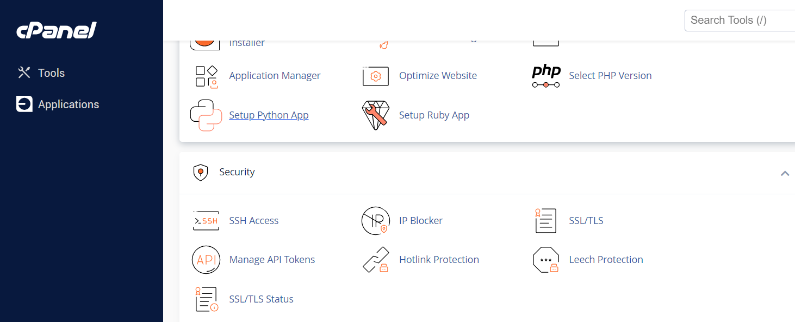
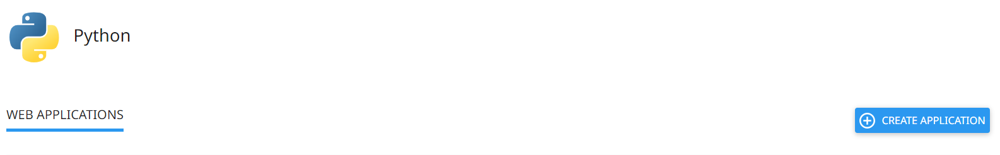
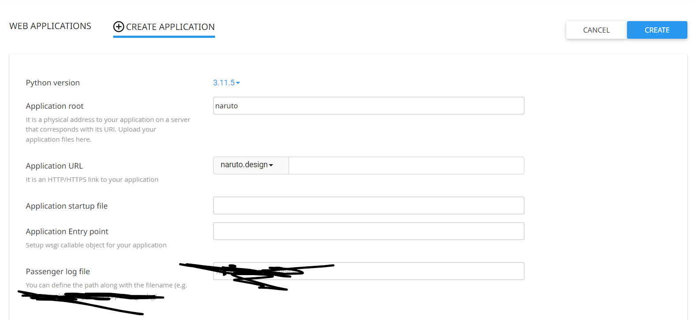
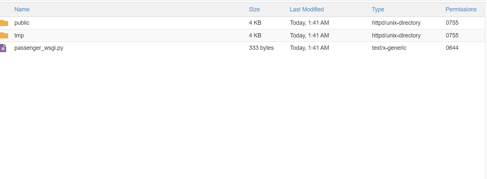

We can deploy Code Very Easily in Hosting with Control Panel
Follow the steps below
- In the control Panel. Go to Setup Python App 
- Click on Create Application 
- You will see a form. Fill that form and Click on Create 
- Now in in your Home directory Find your project name that contains passenger_wsgi.py file 
-
Open passenger_wsgi.py and replace current code with following code
import os import sys import json from backend.app.index import handle_api_request sys.path.insert(0, os.path.dirname(__file__)) def application(environ, start_response): # Initialize a flag to check if a matching route is found route_found = False # Handle file requests with open('routing.json') as f: data = json.load(f) for i in data['routes']: if environ['PATH_INFO'] == i['path']: print(i['path'] + " " + i['component']) file_path = "src/components/" + i['component'] # Read the content of the file with open(file_path, 'r') as file_content: response = file_content.read().encode('utf-8') start_response('200 OK', [('Content-Type', 'text/html')]) # Set the flag to True to indicate a route is found route_found = True break # If no matching route is found, call handle_api_request if not route_found: start_response('200 OK', [('Content-Type', 'application/json')]) api_response = handle_api_request(environ['PATH_INFO']) response = json.dumps(api_response).encode('utf-8') return [response]
- Make a zip of your Naruto file and Upload it to this directory and Extract and Move files
- Also now open the folder in public_html that should contain relevent files and Repeat above steps